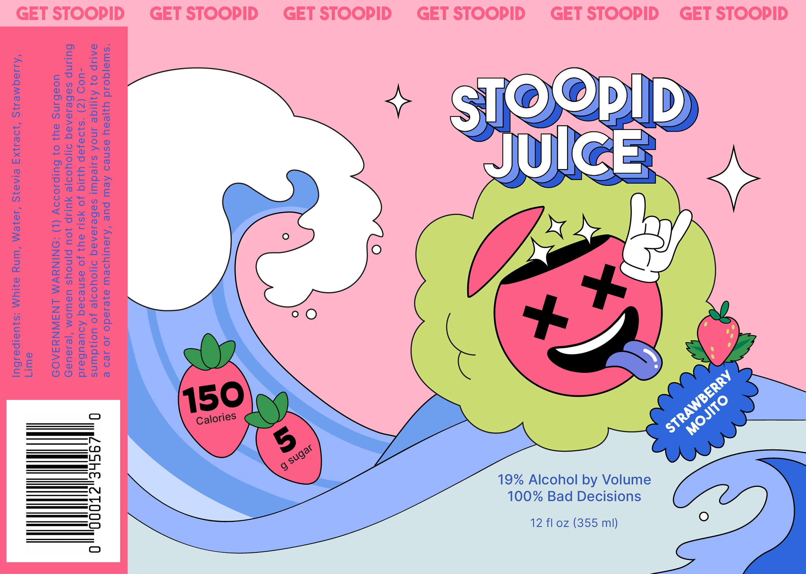
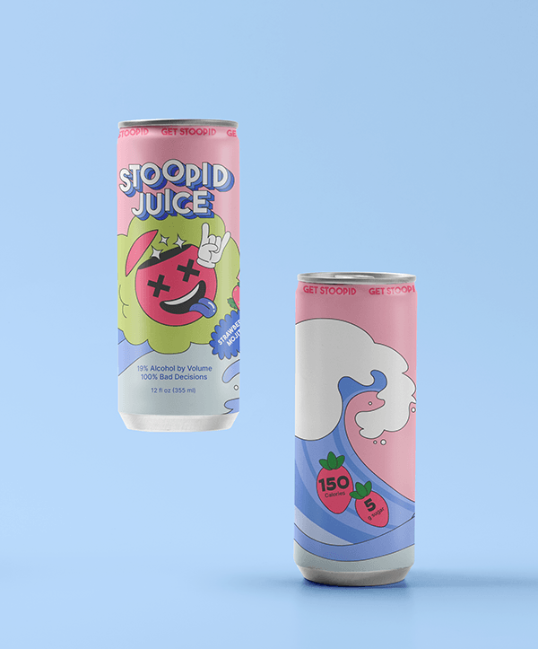
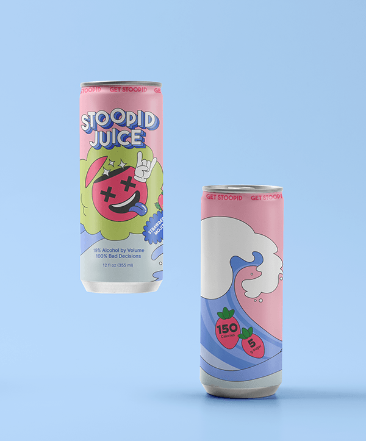

Book Dragon
Designing a fun-loving drink brand

Stoopid Juice is an unconventional and audacious drink brand aimed at party people who don’t take life too seriously. As a canned cocktail, Stoopid Juice was created to take the guesswork out of picking the perfect party drink. Light on sugar but heavy on flavor and punch, this smooth yet boozy cocktail is a guaranteed crowd-pleaser.
Context
Consumer research
The target demographic for this drink is young adults aged 21 to 35. This is a party drink, where it is an easy and convenient choice for party-goers who are looking for a high ABV mixed drink that tastes delicious.. I did research into how young adults shop for drinks. Market research reveals that the 19.2-ounce can, also called the stovetop can, is a popular choice amongst young adults. I chose a tall can, becuase it is a popular choice amongst young adults. The tall can is narrower, which allows it to take up less space in a refrigerator that is either small, like a mini-fridge, or crowded, as would be the case in a household shared amongst many roomates. New research from CGA’s On Premise User Survey shows that the average RTD drinker is young — only 16% of drinkers of the category are above the age of 55. They’re a little wealthier than the average American, with an average annual salary of $83,000. And, they dine out often — 75% of RTD consumers go for dinner once a week.
Competition Analysis

Any brewer, vintner, or distiller knows that the beverage industry is overrun with competition. Every week a new ready-to-drink canned cocktail brand emerges, vying for attention in an already saturated market. The challenge in this case, as with most brands, is standing out in a crowded market. Stoopid Juice differentiates itself through an irreverent brand identity, rich with storytelling potential and humor. Humor is an often-underutilized but powerful marketing tool that creates lasting positive impressions with consumers. With this brand, I decided to lean into the absurdity that is already ever-present in party scenes.
Design
Branding
BookDragons mission is simple: to provide a broad scope of literary works for all people, and to nurture a community of like-minded book lovers. BookDragon champions intellectual curiosity, academic freedom, and inclusivity. As such, I wanted the branding to reflect this committment to openness and imagination.
 
